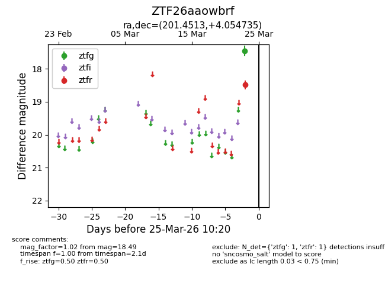
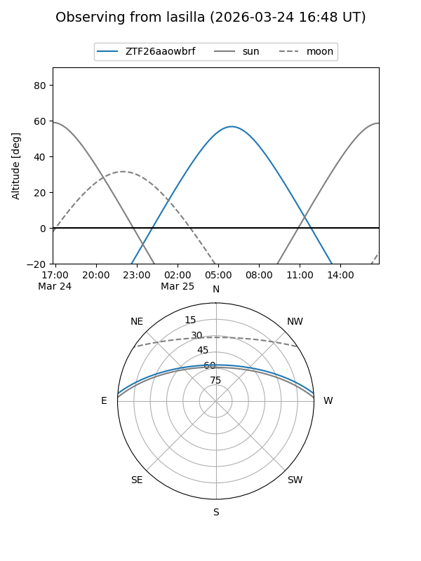
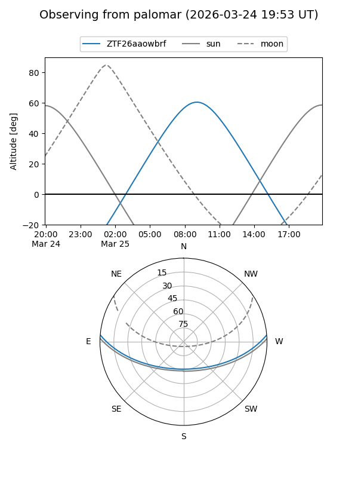

ZTF26aaowbrf
Target ZTF26aaowbrf at 2026-03-25 10:22
Aliases and brokers:
FINK: link
Lasair: link
ALeRCE: link
alt names
ZTF26aaowbrf (ztf,fink_ztf)
Coordinates:
equatorial (ra, dec) = 201.4513,+4.05474
equatorial (HMS+DMS) = 13:25:48.32,+04:03:17.05
galactic (l, b) = (324.0015,+65.51087)
Flags:
Photometry:
last ztfg=17.46, ztfr=18.49
1 ztfg, 1 ztfr detections
Lightcurve

Visibility


Additional plots